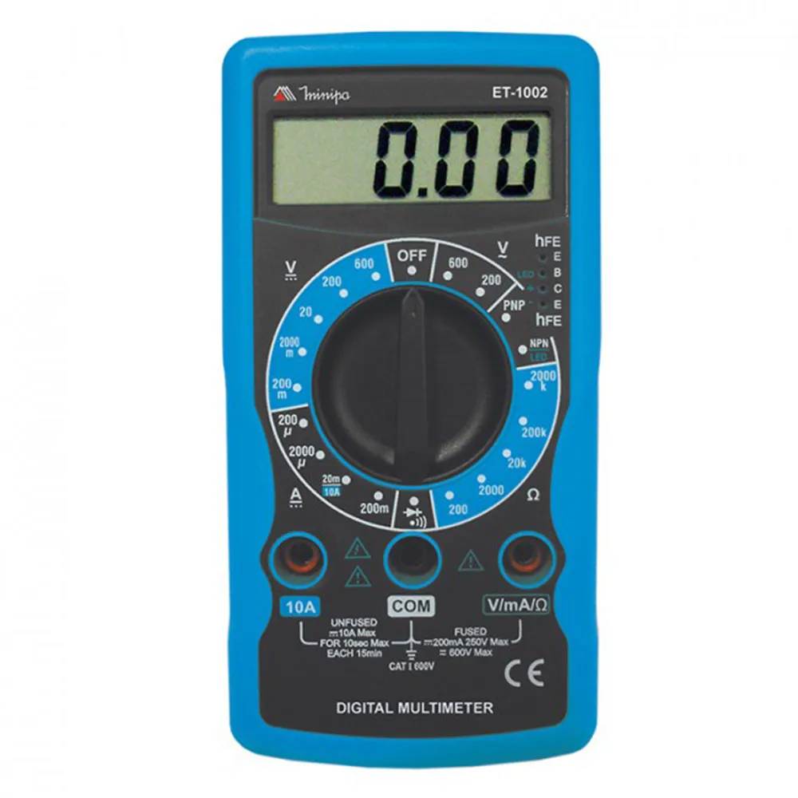

Instrumento essencial para medições e testes elétricos
O multímetro (ou multiteste) é o "canivete suíço" de qualquer pessoa que trabalha com eletricidade, eletrônica ou automação industrial. É um instrumento versátil que serve para medir diferentes grandezas elétricas em um único aparelho.
É a energia das tomadas da sua casa ou de motores industriais. Varia de 200V até 600V em aplicações comuns.
É a energia de pilhas, baterias e circuitos eletrônicos. Varia de 200mV até 600V nas escalas disponíveis.
Mede a resistência de componentes, testa se equipamentos estão queimados, verifica continuidade em bobinas.
Mede o fluxo de elétrons passando por um circuito. Pode ser AC ou DC dependendo do modelo.
